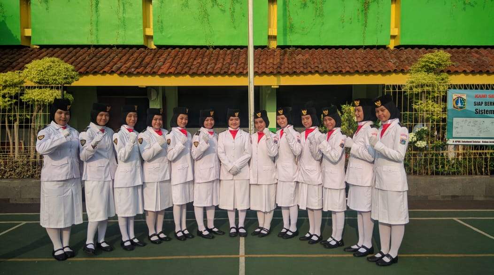
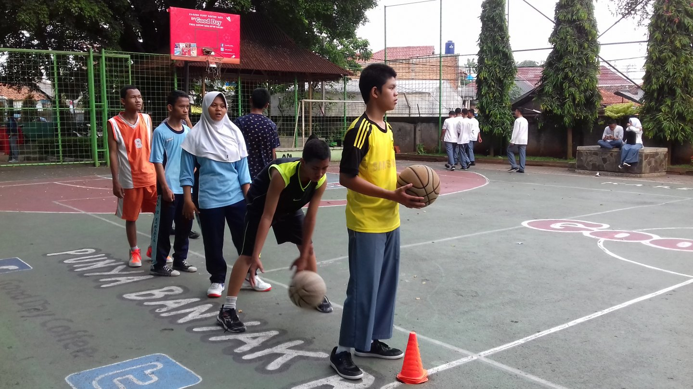

Ekstrakulikuler
Berikut Salah satu Ekstrakulikuler di sekolah

Paskibraka
Paskibra ialah suatu ekstrakurikuler yang dapat menjadi media bagi anggotanya untuk membentuk nilai penting dalam diri.

Futsal
Futsal diadakan dengan tujuan menyediakan wadah untuk siswa menyalurkan hobinya&menghadirkan corak positif kepada para siswa

Pramuka
Kegiatan Pramuka merupakan ekstrakurikuler wajib artinya seluruh peserta didik di sekolah wajib untuk mengikuti kegiatan ini.

Basket
bola basket merupakan salah satu kegiatan ekskul olahraga yang sangat di minati oleh peserta didik.